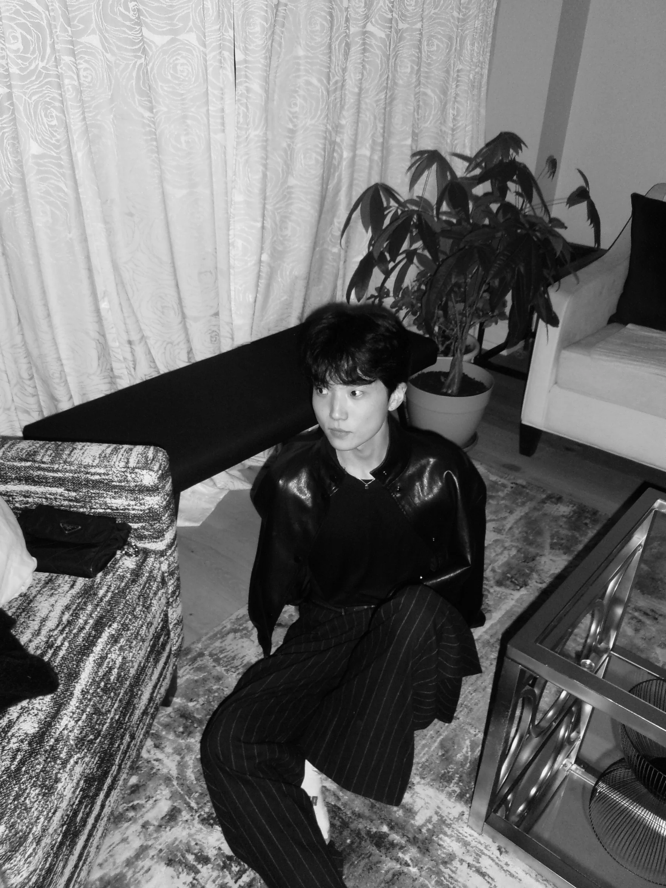
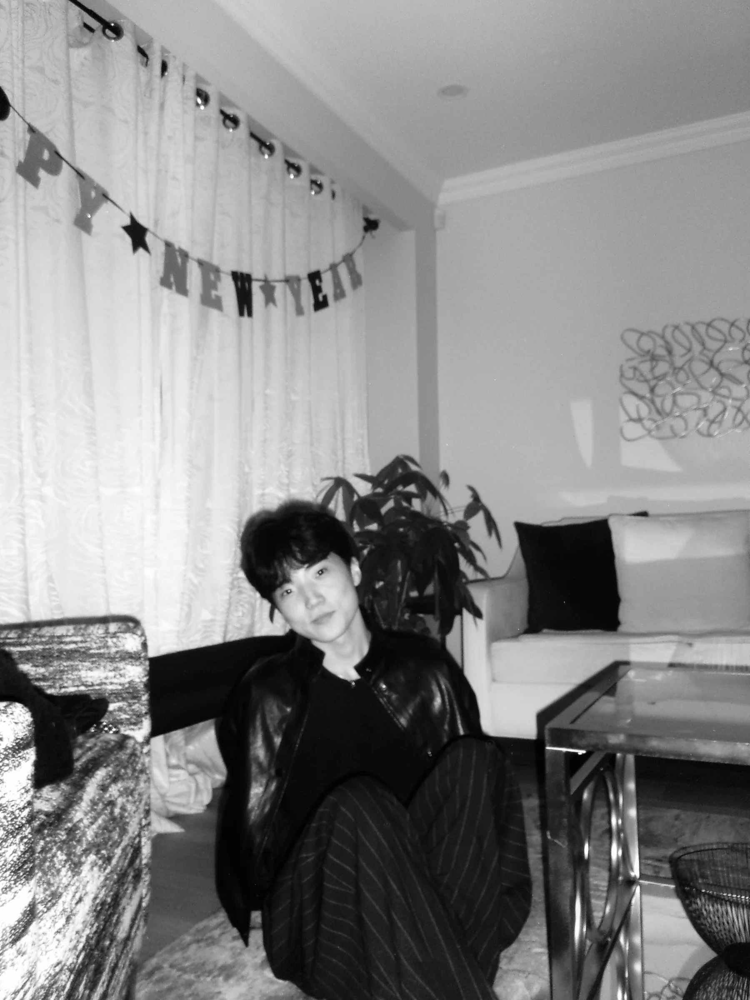
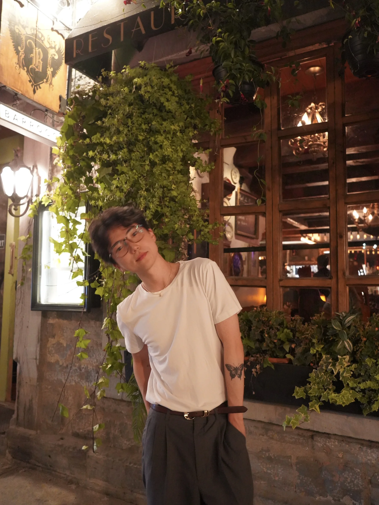
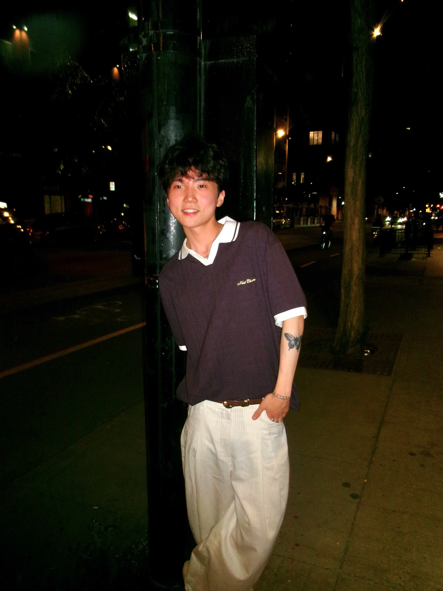

SEBASTIAN HART / JOURNALNO. 03 — 2025
PERSONAL ARCHIVE
Personal Fashion / Photography / Image



Personal style is an ongoing archive — a collection of references, instincts and evolving ways of seeing.
PERSONAL FASHION / PHOTOGRAPHY / IMAGE

SELECTED WORK / 03BACK TO CONTENTS ↗